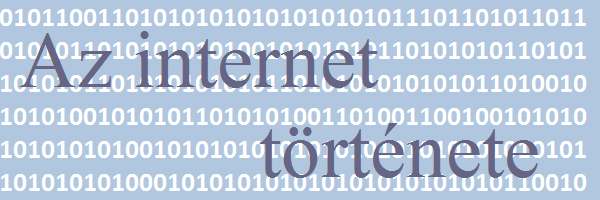

 |
|||
| Vannevar Bush | Paul Baran | J.C.R. Licklider | Lawrence Roberts |
| Robert Metcalfe | Douglas Engelbart | Vinton Cerf | Robert E. Kahn |
|
Bevezető Az elmúlt évtizedekben világszerte sok számítógép-hálózatot hoztak létre. Elsőként ún. lokális hálózatok alakultak ki. Ezek a fizikailag egymáshoz közel található számítógépeket kapcsolják össze - általában egy-egy intézmény, cég vagy egyéb szervezet számítógépeit -, és a belső forgalmat bonyolítják. Hamarosan kiderült azonban, hogy nagyszerű dolog lenne, ha nemcsak intézményen belül, hanem intézmények között is létrejöhetne számítógépes kommunikáció. Ezért aztán elkezdték a lokális hálózatokat is összekapcsolni egymással, és az egyik ilyen rendszer olyan hatalmasra növekedett, hogy ma már a világ csaknem összes országába eljutott, és több százmillió ember használja. Ezt nevezzük internetnek. Az internet tehát a hálózatok hálózata. A kifejezés nem valamiféle pátosszal teli fokozás (mint például "a királyok királya"), hanem egyszerűen arra utal, hogy sok-sok hálózatból álló összetett rendszerről van szó. Ahhoz persze, hogy a sok, egymástól független számítógép-hálózatot össze lehessen kapcsolni egymással, egy sor technikai problémát kellett leküzdeni. Hiszen a fejlődés kezdetén számos különböző, egymással együttműködni nem tudó (nem kompatibilis) lokális hálózati megoldás terjedt el a világon. A különbözőség vonatkozik mind az összekapcsolás fizikai (elektromos és mechanikai) megvalósítására, mind a számítógépek által követett kommunikációs szabályokra (protokoll). Meg kellett tehát oldani ezek egységesítését, illetve összekapcsolhatóságát. Természetesen sok próbálkozás történt erre a nem is olyan egyszerű feladatra. A legsikeresebbnek az internet-technológia bizonyult, így rövidesen ez terjedt el mindenütt a világon. Forrás: Máray Tamás Hálózatok hálózata: az internet (Mindentudás egyeteme) Az alábbiakban néhány olyan emberrel ismerkedhetünk meg, akik kiemelkedő szerepet játszottak az internet kialakulásában. |
|||